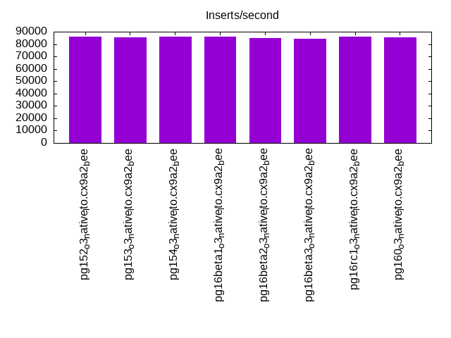
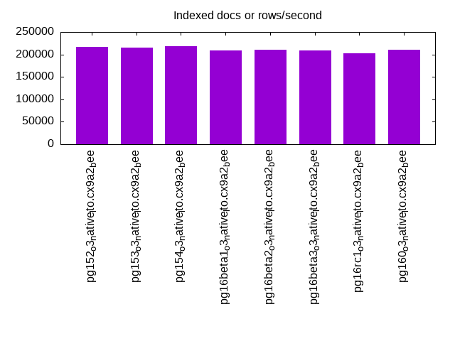
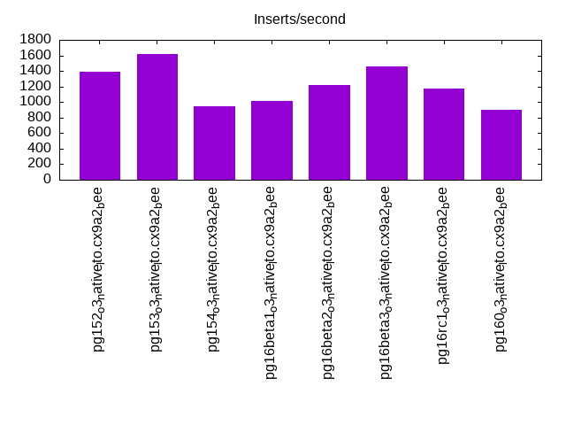
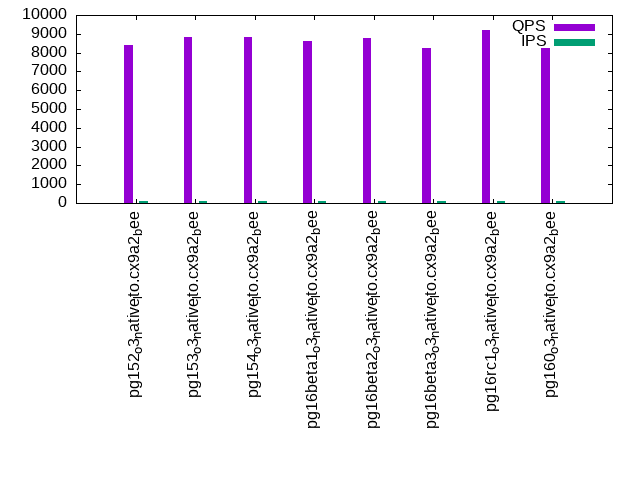
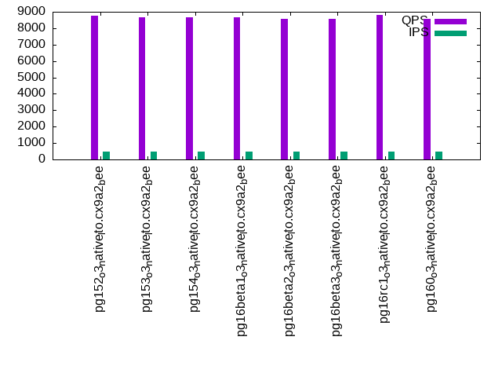
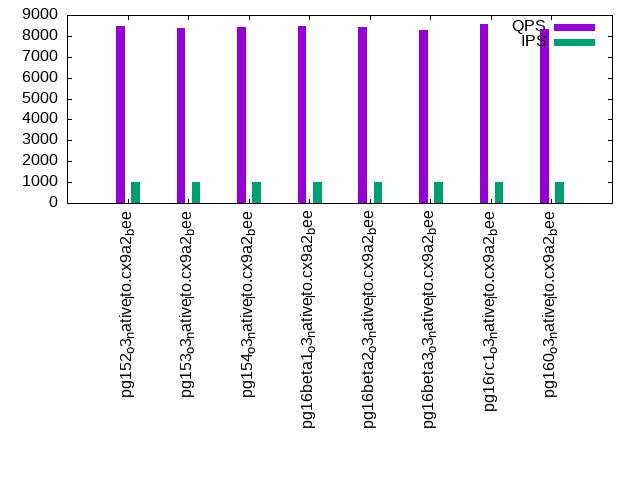

This is a report for the insert benchmark with 800M docs and 1 client(s). It is generated by scripts (bash, awk, sed) and Tufte might not be impressed. An overview of the insert benchmark is here and a short update is here. Below, by DBMS, I mean DBMS+version.config. An example is my8020.c10b40 where my means MySQL, 8020 is version 8.0.20 and c10b40 is the name for the configuration file.
The test server has 8 AMD cores, 16G RAM and an NVMe SSD. It is described here as the Beelink. The benchmark was run with 1 client and there were 1 or 3 connections per client (1 for queries or inserts without rate limits, 1+1 for rate limited inserts+deletes). It uses 1 table. It loads 800M rows per table without secondary indexes, creates secondary indexes, then inserts 30M rows per table with a delete per insert to avoid growing the table. It then does 3 read+write tests for 7200s each that do queries as fast as possible with 100, 500 and then 1000 inserts/second/client concurrent with the queries and 1000 deletes/second to avoid growing the table. The database is cached by Postgres. Clients and the DBMS share one server. The per-database configs are in the per-database subdirectories here.
The tested DBMS are:
The numbers are inserts/s for l.i0 and l.i1, indexed docs (or rows) /s for l.x and queries/s for q*.2. The values are the average rate over the entire test for inserts (IPS) and queries (QPS). The range of values for IPS and QPS is split into 3 parts: bottom 25%, middle 50%, top 25%. Values in the bottom 25% have a red background, values in the top 25% have a green background and values in the middle have no color. A gray background is used for values that can be ignored because the DBMS did not sustain the target insert rate. Red backgrounds are not used when the minimum value is within 80% of the max value.
| dbms | l.i0 | l.x | l.i1 | q100.1 | q500.1 | q1000.1 |
|---|---|---|---|---|---|---|
| pg152_o3_native_lto.cx9a2_bee | 86142 | 216947 | 1391 | 8409 | 8771 | 8487 |
| pg153_o3_native_lto.cx9a2_bee | 85470 | 215777 | 1620 | 8838 | 8681 | 8372 |
| pg154_o3_native_lto.cx9a2_bee | 86068 | 218070 | 940 | 8830 | 8675 | 8437 |
| pg16beta1_o3_native_lto.cx9a2_bee | 85929 | 209231 | 1012 | 8606 | 8648 | 8460 |
| pg16beta2_o3_native_lto.cx9a2_bee | 84629 | 211164 | 1223 | 8799 | 8584 | 8424 |
| pg16beta3_o3_native_lto.cx9a2_bee | 84459 | 208305 | 1460 | 8233 | 8572 | 8286 |
| pg16rc1_o3_native_lto.cx9a2_bee | 85975 | 203020 | 1175 | 9218 | 8800 | 8578 |
| pg160_o3_native_lto.cx9a2_bee | 85206 | 210830 | 899 | 8252 | 8548 | 8342 |
This table has relative throughput, throughput for the DBMS relative to the DBMS in the first line, using the absolute throughput from the previous table. Values less than 0.95 have a yellow background. Values greater than 1.05 have a blue background.
| dbms | l.i0 | l.x | l.i1 | q100.1 | q500.1 | q1000.1 |
|---|---|---|---|---|---|---|
| pg152_o3_native_lto.cx9a2_bee | 1.00 | 1.00 | 1.00 | 1.00 | 1.00 | 1.00 |
| pg153_o3_native_lto.cx9a2_bee | 0.99 | 0.99 | 1.16 | 1.05 | 0.99 | 0.99 |
| pg154_o3_native_lto.cx9a2_bee | 1.00 | 1.01 | 0.68 | 1.05 | 0.99 | 0.99 |
| pg16beta1_o3_native_lto.cx9a2_bee | 1.00 | 0.96 | 0.73 | 1.02 | 0.99 | 1.00 |
| pg16beta2_o3_native_lto.cx9a2_bee | 0.98 | 0.97 | 0.88 | 1.05 | 0.98 | 0.99 |
| pg16beta3_o3_native_lto.cx9a2_bee | 0.98 | 0.96 | 1.05 | 0.98 | 0.98 | 0.98 |
| pg16rc1_o3_native_lto.cx9a2_bee | 1.00 | 0.94 | 0.84 | 1.10 | 1.00 | 1.01 |
| pg160_o3_native_lto.cx9a2_bee | 0.99 | 0.97 | 0.65 | 0.98 | 0.97 | 0.98 |
This lists the average rate of inserts/s for the tests that do inserts concurrent with queries. For such tests the query rate is listed in the table above. The read+write tests are setup so that the insert rate should match the target rate every second. Cells that are not at least 95% of the target have a red background to indicate a failure to satisfy the target.
| dbms | q100.1 | q500.1 | q1000.1 |
|---|---|---|---|
| pg152_o3_native_lto.cx9a2_bee | 100 | 499 | 998 |
| pg153_o3_native_lto.cx9a2_bee | 100 | 499 | 999 |
| pg154_o3_native_lto.cx9a2_bee | 100 | 499 | 998 |
| pg16beta1_o3_native_lto.cx9a2_bee | 100 | 499 | 997 |
| pg16beta2_o3_native_lto.cx9a2_bee | 100 | 499 | 998 |
| pg16beta3_o3_native_lto.cx9a2_bee | 100 | 499 | 998 |
| pg16rc1_o3_native_lto.cx9a2_bee | 100 | 499 | 998 |
| pg160_o3_native_lto.cx9a2_bee | 100 | 499 | 998 |
| target | 100 | 500 | 1000 |
l.i0: load without secondary indexes. Graphs for performance per 1-second interval are here.
Average throughput:
Insert response time histogram: each cell has the percentage of responses that take <= the time in the header and max is the max response time in seconds. For the max column values in the top 25% of the range have a red background and in the bottom 25% of the range have a green background. The red background is not used when the min value is within 80% of the max value.
| dbms | 256us | 1ms | 4ms | 16ms | 64ms | 256ms | 1s | 4s | 16s | gt | max |
|---|---|---|---|---|---|---|---|---|---|---|---|
| pg152_o3_native_lto.cx9a2_bee | 0.025 | 99.972 | 0.002 | nonzero | nonzero | 0.075 | |||||
| pg153_o3_native_lto.cx9a2_bee | 0.015 | 99.984 | 0.001 | nonzero | nonzero | 0.099 | |||||
| pg154_o3_native_lto.cx9a2_bee | 0.045 | 99.952 | 0.003 | 0.001 | nonzero | 0.105 | |||||
| pg16beta1_o3_native_lto.cx9a2_bee | 0.029 | 99.969 | 0.002 | nonzero | 0.062 | ||||||
| pg16beta2_o3_native_lto.cx9a2_bee | nonzero | 99.999 | 0.001 | nonzero | 0.061 | ||||||
| pg16beta3_o3_native_lto.cx9a2_bee | nonzero | 99.998 | 0.002 | nonzero | nonzero | 0.098 | |||||
| pg16rc1_o3_native_lto.cx9a2_bee | 0.038 | 99.960 | 0.002 | nonzero | 0.056 | ||||||
| pg160_o3_native_lto.cx9a2_bee | 0.003 | 99.994 | 0.003 | 0.001 | 0.059 |
Performance metrics for the DBMS listed above. Some are normalized by throughput, others are not. Legend for results is here.
ips qps rps rmbps wps wmbps rpq rkbpq wpi wkbpi csps cpups cspq cpupq dbgb1 dbgb2 rss maxop p50 p99 tag 86142 0 36 0.3 124.4 35.5 0.000 0.003 0.001 0.422 10381 22.7 0.121 21 76.5 116.6 1.0 0.075 86304 83807 800m.pg152_o3_native_lto.cx9a2_bee 85470 0 36 0.3 123.8 35.2 0.000 0.003 0.001 0.422 10335 22.5 0.121 21 76.5 116.6 0.6 0.099 85606 83392 800m.pg153_o3_native_lto.cx9a2_bee 86068 0 36 0.3 126.4 35.6 0.000 0.003 0.001 0.424 10405 22.7 0.121 21 76.5 116.6 0.3 0.105 86303 83704 800m.pg154_o3_native_lto.cx9a2_bee 85929 0 35 0.3 124.6 35.4 0.000 0.003 0.001 0.422 10374 22.6 0.121 21 76.5 116.6 5.0 0.062 86204 83488 800m.pg16beta1_o3_native_lto.cx9a2_bee 84629 0 35 0.3 123.1 34.9 0.000 0.003 0.001 0.423 10264 22.7 0.121 21 76.5 116.6 0.6 0.061 84908 82158 800m.pg16beta2_o3_native_lto.cx9a2_bee 84459 0 34 0.3 122.8 34.8 0.000 0.003 0.001 0.422 10216 22.7 0.121 22 76.5 116.6 0.1 0.098 84705 82138 800m.pg16beta3_o3_native_lto.cx9a2_bee 85975 0 35 0.3 124.7 35.5 0.000 0.003 0.001 0.422 10369 22.8 0.121 21 76.5 116.6 0.2 0.056 86107 83564 800m.pg16rc1_o3_native_lto.cx9a2_bee 85206 0 36 0.3 119.0 35.3 0.000 0.003 0.001 0.424 10289 22.8 0.121 21 76.5 116.6 1.2 0.059 85344 82996 800m.pg160_o3_native_lto.cx9a2_bee
l.x: create secondary indexes.
Average throughput:
Performance metrics for the DBMS listed above. Some are normalized by throughput, others are not. Legend for results is here.
ips qps rps rmbps wps wmbps rpq rkbpq wpi wkbpi csps cpups cspq cpupq dbgb1 dbgb2 rss maxop p50 p99 tag 216947 0 631 78.3 202.8 74.1 0.003 0.369 0.001 0.350 450 12.4 0.002 5 147.0 187.1 10.2 0.005 NA NA 800m.pg152_o3_native_lto.cx9a2_bee 215777 0 628 77.9 199.6 73.7 0.003 0.370 0.001 0.350 470 12.4 0.002 5 147.0 187.1 10.2 0.005 NA NA 800m.pg153_o3_native_lto.cx9a2_bee 218070 0 635 78.7 204.3 74.2 0.003 0.370 0.001 0.349 456 12.5 0.002 5 147.0 187.1 10.2 0.005 NA NA 800m.pg154_o3_native_lto.cx9a2_bee 209231 0 609 75.6 195.9 71.4 0.003 0.370 0.001 0.350 418 12.4 0.002 5 147.1 187.1 10.2 0.006 NA NA 800m.pg16beta1_o3_native_lto.cx9a2_bee 211164 0 614 76.3 196.3 72.3 0.003 0.370 0.001 0.351 422 12.4 0.002 5 147.0 187.1 10.2 0.005 NA NA 800m.pg16beta2_o3_native_lto.cx9a2_bee 208305 0 605 75.1 196.5 71.2 0.003 0.369 0.001 0.350 405 12.4 0.002 5 147.0 187.1 10.2 0.008 NA NA 800m.pg16beta3_o3_native_lto.cx9a2_bee 203020 0 589 73.2 187.5 69.4 0.003 0.369 0.001 0.350 422 12.4 0.002 5 147.0 187.1 10.2 0.005 NA NA 800m.pg16rc1_o3_native_lto.cx9a2_bee 210830 0 613 76.1 191.7 71.9 0.003 0.369 0.001 0.349 450 12.5 0.002 5 147.0 187.1 10.2 0.004 NA NA 800m.pg160_o3_native_lto.cx9a2_bee
l.i1: continue load after secondary indexes created. Graphs for performance per 1-second interval are here.
Average throughput:
Insert response time histogram: each cell has the percentage of responses that take <= the time in the header and max is the max response time in seconds. For the max column values in the top 25% of the range have a red background and in the bottom 25% of the range have a green background. The red background is not used when the min value is within 80% of the max value.
| dbms | 256us | 1ms | 4ms | 16ms | 64ms | 256ms | 1s | 4s | 16s | gt | max |
|---|---|---|---|---|---|---|---|---|---|---|---|
| pg152_o3_native_lto.cx9a2_bee | 82.260 | 17.709 | 0.032 | nonzero | 0.273 | ||||||
| pg153_o3_native_lto.cx9a2_bee | 82.103 | 17.868 | 0.030 | 0.196 | |||||||
| pg154_o3_native_lto.cx9a2_bee | 88.468 | 11.530 | 0.002 | 0.252 | |||||||
| pg16beta1_o3_native_lto.cx9a2_bee | 80.703 | 19.269 | 0.028 | nonzero | 0.271 | ||||||
| pg16beta2_o3_native_lto.cx9a2_bee | 84.987 | 14.983 | 0.030 | nonzero | 0.265 | ||||||
| pg16beta3_o3_native_lto.cx9a2_bee | 82.885 | 17.084 | 0.031 | nonzero | 0.294 | ||||||
| pg16rc1_o3_native_lto.cx9a2_bee | 81.402 | 18.565 | 0.032 | 0.231 | |||||||
| pg160_o3_native_lto.cx9a2_bee | 86.370 | 13.626 | 0.004 | 0.207 |
Delete response time histogram: each cell has the percentage of responses that take <= the time in the header and max is the max response time in seconds. For the max column values in the top 25% of the range have a red background and in the bottom 25% of the range have a green background. The red background is not used when the min value is within 80% of the max value.
| dbms | 256us | 1ms | 4ms | 16ms | 64ms | 256ms | 1s | 4s | 16s | gt | max |
|---|---|---|---|---|---|---|---|---|---|---|---|
| pg152_o3_native_lto.cx9a2_bee | 0.001 | 54.322 | 0.719 | 3.750 | 20.009 | 21.199 | 0.123 | ||||
| pg153_o3_native_lto.cx9a2_bee | 0.001 | 58.486 | 0.839 | 4.481 | 20.259 | 15.935 | 0.102 | ||||
| pg154_o3_native_lto.cx9a2_bee | 0.003 | 48.612 | 0.810 | 4.523 | 16.787 | 29.265 | nonzero | 0.281 | |||
| pg16beta1_o3_native_lto.cx9a2_bee | 0.002 | 46.577 | 0.843 | 4.396 | 16.449 | 31.734 | 0.167 | ||||
| pg16beta2_o3_native_lto.cx9a2_bee | 0.003 | 56.383 | 0.692 | 3.754 | 14.062 | 25.106 | 0.167 | ||||
| pg16beta3_o3_native_lto.cx9a2_bee | 0.003 | 62.224 | 0.715 | 3.713 | 13.978 | 19.367 | 0.137 | ||||
| pg16rc1_o3_native_lto.cx9a2_bee | 0.002 | 55.801 | 0.685 | 3.766 | 13.915 | 25.832 | 0.159 | ||||
| pg160_o3_native_lto.cx9a2_bee | 0.003 | 50.140 | 0.801 | 4.492 | 16.317 | 28.247 | nonzero | 0.343 |
Performance metrics for the DBMS listed above. Some are normalized by throughput, others are not. Legend for results is here.
ips qps rps rmbps wps wmbps rpq rkbpq wpi wkbpi csps cpups cspq cpupq dbgb1 dbgb2 rss maxop p50 p99 tag 1391 0 2262 22.1 2662.6 40.3 1.627 16.244 1.914 29.653 5420 12.3 3.897 708 150.9 190.5 8.7 0.273 750 447 800m.pg152_o3_native_lto.cx9a2_bee 1620 0 2635 25.7 3095.7 46.7 1.627 16.251 1.911 29.506 6283 12.0 3.879 593 150.9 190.9 9.1 0.196 849 499 800m.pg153_o3_native_lto.cx9a2_bee 940 0 1506 12.0 1747.9 25.7 1.601 13.029 1.859 27.957 3667 12.5 3.900 1063 152.2 192.2 9.7 0.252 400 250 800m.pg154_o3_native_lto.cx9a2_bee 1012 0 1652 16.1 1950.3 30.2 1.632 16.282 1.927 30.596 4026 12.7 3.977 1004 151.5 191.5 8.7 0.271 499 300 800m.pg16beta1_o3_native_lto.cx9a2_bee 1223 0 1989 19.4 2345.8 36.0 1.627 16.235 1.918 30.144 4785 12.5 3.913 818 150.7 190.8 8.8 0.265 549 309 800m.pg16beta2_o3_native_lto.cx9a2_bee 1460 0 2373 23.1 2795.9 42.4 1.625 16.206 1.915 29.768 5676 12.0 3.887 657 150.6 190.6 2.3 0.294 699 399 800m.pg16beta3_o3_native_lto.cx9a2_bee 1175 0 1912 18.6 2259.0 34.8 1.628 16.244 1.923 30.297 4620 12.4 3.932 844 150.8 190.9 8.6 0.231 549 300 800m.pg16rc1_o3_native_lto.cx9a2_bee 899 0 1441 11.5 1671.5 24.9 1.602 13.139 1.859 28.382 3519 12.4 3.912 1103 152.2 192.2 1.3 0.207 350 249 800m.pg160_o3_native_lto.cx9a2_bee
q100.1: range queries with 100 insert/s per client. Graphs for performance per 1-second interval are here.
Average throughput:
Query response time histogram: each cell has the percentage of responses that take <= the time in the header and max is the max response time in seconds. For max values in the top 25% of the range have a red background and in the bottom 25% of the range have a green background. The red background is not used when the min value is within 80% of the max value.
| dbms | 256us | 1ms | 4ms | 16ms | 64ms | 256ms | 1s | 4s | 16s | gt | max |
|---|---|---|---|---|---|---|---|---|---|---|---|
| pg152_o3_native_lto.cx9a2_bee | 99.841 | 0.157 | 0.001 | 0.001 | 0.016 | ||||||
| pg153_o3_native_lto.cx9a2_bee | 99.849 | 0.149 | 0.001 | 0.001 | 0.016 | ||||||
| pg154_o3_native_lto.cx9a2_bee | 99.879 | 0.119 | nonzero | 0.002 | 0.015 | ||||||
| pg16beta1_o3_native_lto.cx9a2_bee | 99.848 | 0.150 | 0.001 | 0.001 | 0.016 | ||||||
| pg16beta2_o3_native_lto.cx9a2_bee | 99.851 | 0.146 | 0.001 | 0.001 | 0.016 | ||||||
| pg16beta3_o3_native_lto.cx9a2_bee | 99.832 | 0.166 | nonzero | 0.001 | nonzero | 0.020 | |||||
| pg16rc1_o3_native_lto.cx9a2_bee | 99.862 | 0.136 | nonzero | 0.001 | 0.016 | ||||||
| pg160_o3_native_lto.cx9a2_bee | 99.874 | 0.125 | nonzero | 0.002 | nonzero | 0.017 |
Insert response time histogram: each cell has the percentage of responses that take <= the time in the header and max is the max response time in seconds. For max values in the top 25% of the range have a red background and in the bottom 25% of the range have a green background. The red background is not used when the min value is within 80% of the max value.
| dbms | 256us | 1ms | 4ms | 16ms | 64ms | 256ms | 1s | 4s | 16s | gt | max |
|---|---|---|---|---|---|---|---|---|---|---|---|
| pg152_o3_native_lto.cx9a2_bee | 69.090 | 30.910 | 0.033 | ||||||||
| pg153_o3_native_lto.cx9a2_bee | 74.438 | 25.562 | 0.031 | ||||||||
| pg154_o3_native_lto.cx9a2_bee | 73.257 | 26.743 | 0.031 | ||||||||
| pg16beta1_o3_native_lto.cx9a2_bee | 71.229 | 28.771 | 0.033 | ||||||||
| pg16beta2_o3_native_lto.cx9a2_bee | 68.799 | 31.201 | 0.034 | ||||||||
| pg16beta3_o3_native_lto.cx9a2_bee | 75.479 | 24.521 | 0.030 | ||||||||
| pg16rc1_o3_native_lto.cx9a2_bee | 75.472 | 24.528 | 0.031 | ||||||||
| pg160_o3_native_lto.cx9a2_bee | 72.389 | 27.611 | 0.030 |
Delete response time histogram: each cell has the percentage of responses that take <= the time in the header and max is the max response time in seconds. For max values in the top 25% of the range have a red background and in the bottom 25% of the range have a green background. The red background is not used when the min value is within 80% of the max value.
| dbms | 256us | 1ms | 4ms | 16ms | 64ms | 256ms | 1s | 4s | 16s | gt | max |
|---|---|---|---|---|---|---|---|---|---|---|---|
| pg152_o3_native_lto.cx9a2_bee | 0.583 | 43.444 | 27.451 | 28.521 | 0.013 | ||||||
| pg153_o3_native_lto.cx9a2_bee | 7.431 | 32.111 | 60.458 | 0.015 | |||||||
| pg154_o3_native_lto.cx9a2_bee | 0.799 | 98.799 | 0.049 | 0.354 | 0.010 | ||||||
| pg16beta1_o3_native_lto.cx9a2_bee | 0.938 | 98.431 | 0.083 | 0.549 | 0.009 | ||||||
| pg16beta2_o3_native_lto.cx9a2_bee | 0.458 | 99.028 | 0.069 | 0.444 | 0.009 | ||||||
| pg16beta3_o3_native_lto.cx9a2_bee | 0.611 | 99.097 | 0.056 | 0.236 | 0.009 | ||||||
| pg16rc1_o3_native_lto.cx9a2_bee | 0.375 | 99.215 | 0.049 | 0.361 | 0.010 | ||||||
| pg160_o3_native_lto.cx9a2_bee | 0.799 | 98.812 | 0.056 | 0.333 | 0.010 |
Performance metrics for the DBMS listed above. Some are normalized by throughput, others are not. Legend for results is here.
ips qps rps rmbps wps wmbps rpq rkbpq wpi wkbpi csps cpups cspq cpupq dbgb1 dbgb2 rss maxop p50 p99 tag 100 8409 180 1.4 217.9 3.5 0.021 0.176 2.184 36.189 32772 13.2 3.897 126 150.9 187.9 10.1 0.016 8252 7658 800m.pg152_o3_native_lto.cx9a2_bee 100 8838 180 1.4 215.2 3.6 0.020 0.167 2.156 36.729 34423 12.9 3.895 117 150.9 184.8 10.1 0.016 8295 7672 800m.pg153_o3_native_lto.cx9a2_bee 100 8830 175 1.4 199.4 3.3 0.020 0.161 2.000 34.337 34367 13.0 3.892 118 152.2 187.7 10.1 0.015 8330 7834 800m.pg154_o3_native_lto.cx9a2_bee 100 8606 181 1.4 207.9 3.4 0.021 0.172 2.087 35.057 33588 12.9 3.903 120 151.5 188.1 10.0 0.016 8244 7094 800m.pg16beta1_o3_native_lto.cx9a2_bee 100 8799 178 1.4 232.4 3.6 0.020 0.166 2.331 37.396 34295 12.9 3.898 117 150.8 186.7 10.1 0.016 8280 7317 800m.pg16beta2_o3_native_lto.cx9a2_bee 100 8233 178 1.4 202.9 3.4 0.022 0.177 2.035 35.424 32117 13.1 3.901 127 150.7 184.9 10.1 0.020 8135 7366 800m.pg16beta3_o3_native_lto.cx9a2_bee 100 9218 180 1.4 217.0 3.6 0.019 0.159 2.177 36.770 35879 12.8 3.892 111 150.9 187.9 10.1 0.016 8740 7658 800m.pg16rc1_o3_native_lto.cx9a2_bee 100 8252 175 1.4 199.8 3.3 0.021 0.173 2.002 34.130 32162 13.2 3.897 128 152.2 187.9 10.1 0.017 8181 7832 800m.pg160_o3_native_lto.cx9a2_bee
q500.1: range queries with 500 insert/s per client. Graphs for performance per 1-second interval are here.
Average throughput:
Query response time histogram: each cell has the percentage of responses that take <= the time in the header and max is the max response time in seconds. For max values in the top 25% of the range have a red background and in the bottom 25% of the range have a green background. The red background is not used when the min value is within 80% of the max value.
| dbms | 256us | 1ms | 4ms | 16ms | 64ms | 256ms | 1s | 4s | 16s | gt | max |
|---|---|---|---|---|---|---|---|---|---|---|---|
| pg152_o3_native_lto.cx9a2_bee | 99.921 | 0.073 | 0.001 | 0.005 | 0.016 | ||||||
| pg153_o3_native_lto.cx9a2_bee | 99.907 | 0.088 | 0.001 | 0.004 | nonzero | 0.016 | |||||
| pg154_o3_native_lto.cx9a2_bee | 99.919 | 0.077 | 0.001 | 0.004 | 0.016 | ||||||
| pg16beta1_o3_native_lto.cx9a2_bee | 99.918 | 0.078 | 0.001 | 0.004 | 0.016 | ||||||
| pg16beta2_o3_native_lto.cx9a2_bee | 99.918 | 0.077 | 0.001 | 0.005 | 0.016 | ||||||
| pg16beta3_o3_native_lto.cx9a2_bee | 99.913 | 0.083 | 0.001 | 0.004 | 0.016 | ||||||
| pg16rc1_o3_native_lto.cx9a2_bee | 99.916 | 0.079 | 0.001 | 0.004 | 0.016 | ||||||
| pg160_o3_native_lto.cx9a2_bee | 99.913 | 0.083 | nonzero | 0.004 | 0.016 |
Insert response time histogram: each cell has the percentage of responses that take <= the time in the header and max is the max response time in seconds. For max values in the top 25% of the range have a red background and in the bottom 25% of the range have a green background. The red background is not used when the min value is within 80% of the max value.
| dbms | 256us | 1ms | 4ms | 16ms | 64ms | 256ms | 1s | 4s | 16s | gt | max |
|---|---|---|---|---|---|---|---|---|---|---|---|
| pg152_o3_native_lto.cx9a2_bee | 93.560 | 6.440 | 0.029 | ||||||||
| pg153_o3_native_lto.cx9a2_bee | 93.535 | 6.465 | 0.029 | ||||||||
| pg154_o3_native_lto.cx9a2_bee | 94.576 | 5.424 | 0.029 | ||||||||
| pg16beta1_o3_native_lto.cx9a2_bee | 93.456 | 6.544 | 0.033 | ||||||||
| pg16beta2_o3_native_lto.cx9a2_bee | 93.251 | 6.749 | 0.029 | ||||||||
| pg16beta3_o3_native_lto.cx9a2_bee | 93.414 | 6.586 | 0.031 | ||||||||
| pg16rc1_o3_native_lto.cx9a2_bee | 92.825 | 7.175 | 0.032 | ||||||||
| pg160_o3_native_lto.cx9a2_bee | 93.987 | 6.013 | 0.029 |
Delete response time histogram: each cell has the percentage of responses that take <= the time in the header and max is the max response time in seconds. For max values in the top 25% of the range have a red background and in the bottom 25% of the range have a green background. The red background is not used when the min value is within 80% of the max value.
| dbms | 256us | 1ms | 4ms | 16ms | 64ms | 256ms | 1s | 4s | 16s | gt | max |
|---|---|---|---|---|---|---|---|---|---|---|---|
| pg152_o3_native_lto.cx9a2_bee | 9.797 | 89.917 | 0.088 | 0.199 | 0.010 | ||||||
| pg153_o3_native_lto.cx9a2_bee | 1.651 | 17.531 | 0.029 | 24.131 | 56.658 | 0.038 | |||||
| pg154_o3_native_lto.cx9a2_bee | 7.900 | 91.857 | 0.089 | 0.154 | 0.009 | ||||||
| pg16beta1_o3_native_lto.cx9a2_bee | 9.069 | 90.632 | 0.078 | 0.221 | 0.009 | ||||||
| pg16beta2_o3_native_lto.cx9a2_bee | 8.690 | 90.971 | 0.068 | 0.271 | 0.009 | ||||||
| pg16beta3_o3_native_lto.cx9a2_bee | 7.232 | 92.474 | 0.081 | 0.214 | 0.010 | ||||||
| pg16rc1_o3_native_lto.cx9a2_bee | 8.306 | 91.365 | 0.061 | 0.268 | 0.009 | ||||||
| pg160_o3_native_lto.cx9a2_bee | 7.989 | 91.761 | 0.062 | 0.188 | 0.009 |
Performance metrics for the DBMS listed above. Some are normalized by throughput, others are not. Legend for results is here.
ips qps rps rmbps wps wmbps rpq rkbpq wpi wkbpi csps cpups cspq cpupq dbgb1 dbgb2 rss maxop p50 p99 tag 499 8771 805 6.4 976.0 14.6 0.092 0.750 1.956 29.886 35577 13.5 4.056 123 151.1 181.6 10.1 0.016 8328 8035 800m.pg152_o3_native_lto.cx9a2_bee 499 8681 806 6.4 985.5 14.6 0.093 0.759 1.975 30.001 35237 15.6 4.059 144 151.1 180.8 10.1 0.016 8231 7916 800m.pg153_o3_native_lto.cx9a2_bee 499 8675 802 6.4 967.4 14.5 0.092 0.755 1.939 29.839 35227 13.5 4.061 124 152.3 182.4 10.1 0.016 8310 8044 800m.pg154_o3_native_lto.cx9a2_bee 499 8648 804 6.4 968.9 14.6 0.093 0.763 1.943 29.896 35132 13.5 4.063 125 151.5 182.0 10.0 0.016 8326 8053 800m.pg16beta1_o3_native_lto.cx9a2_bee 499 8584 805 6.4 973.6 14.6 0.094 0.766 1.952 29.893 34870 13.5 4.062 126 151.0 180.8 10.1 0.016 8263 8006 800m.pg16beta2_o3_native_lto.cx9a2_bee 499 8572 805 6.4 987.5 14.7 0.094 0.767 1.979 30.172 34816 13.5 4.062 126 150.9 180.5 10.1 0.016 8133 7877 800m.pg16beta3_o3_native_lto.cx9a2_bee 499 8800 805 6.4 984.3 14.6 0.091 0.747 1.973 30.023 35702 13.6 4.057 124 151.1 180.8 10.1 0.016 8423 8119 800m.pg16rc1_o3_native_lto.cx9a2_bee 499 8548 803 6.4 966.7 14.5 0.094 0.767 1.937 29.827 34737 13.5 4.064 126 152.3 182.5 10.1 0.016 8135 7850 800m.pg160_o3_native_lto.cx9a2_bee
q1000.1: range queries with 1000 insert/s per client. Graphs for performance per 1-second interval are here.
Average throughput:
Query response time histogram: each cell has the percentage of responses that take <= the time in the header and max is the max response time in seconds. For max values in the top 25% of the range have a red background and in the bottom 25% of the range have a green background. The red background is not used when the min value is within 80% of the max value.
| dbms | 256us | 1ms | 4ms | 16ms | 64ms | 256ms | 1s | 4s | 16s | gt | max |
|---|---|---|---|---|---|---|---|---|---|---|---|
| pg152_o3_native_lto.cx9a2_bee | 99.859 | 0.130 | 0.002 | 0.010 | 0.016 | ||||||
| pg153_o3_native_lto.cx9a2_bee | 99.858 | 0.130 | 0.002 | 0.010 | 0.016 | ||||||
| pg154_o3_native_lto.cx9a2_bee | 99.862 | 0.127 | 0.002 | 0.010 | 0.016 | ||||||
| pg16beta1_o3_native_lto.cx9a2_bee | 99.857 | 0.131 | 0.002 | 0.010 | nonzero | 0.016 | |||||
| pg16beta2_o3_native_lto.cx9a2_bee | 99.860 | 0.128 | 0.002 | 0.010 | nonzero | 0.016 | |||||
| pg16beta3_o3_native_lto.cx9a2_bee | 99.856 | 0.133 | 0.002 | 0.010 | 0.016 | ||||||
| pg16rc1_o3_native_lto.cx9a2_bee | 99.862 | 0.126 | 0.002 | 0.010 | nonzero | 0.019 | |||||
| pg160_o3_native_lto.cx9a2_bee | 99.857 | 0.131 | 0.002 | 0.010 | nonzero | 0.016 |
Insert response time histogram: each cell has the percentage of responses that take <= the time in the header and max is the max response time in seconds. For max values in the top 25% of the range have a red background and in the bottom 25% of the range have a green background. The red background is not used when the min value is within 80% of the max value.
| dbms | 256us | 1ms | 4ms | 16ms | 64ms | 256ms | 1s | 4s | 16s | gt | max |
|---|---|---|---|---|---|---|---|---|---|---|---|
| pg152_o3_native_lto.cx9a2_bee | 97.946 | 2.054 | 0.027 | ||||||||
| pg153_o3_native_lto.cx9a2_bee | 97.876 | 2.124 | 0.028 | ||||||||
| pg154_o3_native_lto.cx9a2_bee | 98.154 | 1.846 | 0.026 | ||||||||
| pg16beta1_o3_native_lto.cx9a2_bee | 98.009 | 1.991 | 0.027 | ||||||||
| pg16beta2_o3_native_lto.cx9a2_bee | 97.966 | 2.034 | 0.027 | ||||||||
| pg16beta3_o3_native_lto.cx9a2_bee | 97.946 | 2.054 | 0.028 | ||||||||
| pg16rc1_o3_native_lto.cx9a2_bee | 97.819 | 2.181 | 0.028 | ||||||||
| pg160_o3_native_lto.cx9a2_bee | 98.001 | 1.999 | 0.027 |
Delete response time histogram: each cell has the percentage of responses that take <= the time in the header and max is the max response time in seconds. For max values in the top 25% of the range have a red background and in the bottom 25% of the range have a green background. The red background is not used when the min value is within 80% of the max value.
| dbms | 256us | 1ms | 4ms | 16ms | 64ms | 256ms | 1s | 4s | 16s | gt | max |
|---|---|---|---|---|---|---|---|---|---|---|---|
| pg152_o3_native_lto.cx9a2_bee | 6.069 | 93.752 | 0.078 | 0.101 | 0.010 | ||||||
| pg153_o3_native_lto.cx9a2_bee | 5.434 | 94.397 | 0.069 | 0.101 | 0.012 | ||||||
| pg154_o3_native_lto.cx9a2_bee | 5.179 | 94.681 | 0.069 | 0.070 | 0.010 | ||||||
| pg16beta1_o3_native_lto.cx9a2_bee | 5.494 | 94.356 | 0.053 | 0.096 | 0.009 | ||||||
| pg16beta2_o3_native_lto.cx9a2_bee | 5.321 | 94.499 | 0.062 | 0.117 | 0.010 | ||||||
| pg16beta3_o3_native_lto.cx9a2_bee | 4.726 | 95.131 | 0.053 | 0.091 | 0.010 | ||||||
| pg16rc1_o3_native_lto.cx9a2_bee | 5.010 | 94.829 | 0.058 | 0.103 | 0.010 | ||||||
| pg160_o3_native_lto.cx9a2_bee | 5.203 | 94.658 | 0.053 | 0.086 | 0.009 |
Performance metrics for the DBMS listed above. Some are normalized by throughput, others are not. Legend for results is here.
ips qps rps rmbps wps wmbps rpq rkbpq wpi wkbpi csps cpups cspq cpupq dbgb1 dbgb2 rss maxop p50 p99 tag 998 8487 1625 13.0 1961.5 28.8 0.192 1.570 1.965 29.522 36423 14.7 4.292 139 151.6 190.7 9.8 0.016 8182 7767 800m.pg152_o3_native_lto.cx9a2_bee 999 8372 1624 13.0 1951.8 28.5 0.194 1.588 1.955 29.225 35955 14.7 4.295 140 151.7 190.9 9.8 0.016 8086 7765 800m.pg153_o3_native_lto.cx9a2_bee 998 8437 1624 13.0 1942.5 28.3 0.192 1.577 1.946 29.047 36238 14.7 4.295 139 152.9 192.1 9.9 0.016 8108 7797 800m.pg154_o3_native_lto.cx9a2_bee 997 8460 1626 13.1 1953.0 28.3 0.192 1.582 1.959 29.048 36336 14.6 4.295 138 151.7 190.9 9.8 0.016 8170 7794 800m.pg16beta1_o3_native_lto.cx9a2_bee 998 8424 1625 13.0 1957.4 28.8 0.193 1.580 1.962 29.592 36159 14.8 4.292 141 151.6 190.7 9.7 0.016 8184 7866 800m.pg16beta2_o3_native_lto.cx9a2_bee 998 8286 1625 13.0 1943.1 28.4 0.196 1.606 1.947 29.109 35615 14.7 4.298 142 151.6 190.8 9.7 0.016 7998 7656 800m.pg16beta3_o3_native_lto.cx9a2_bee 998 8578 1625 13.0 1950.7 28.6 0.189 1.553 1.954 29.313 36729 14.7 4.282 137 151.6 190.9 9.7 0.019 8276 7912 800m.pg16rc1_o3_native_lto.cx9a2_bee 998 8342 1624 13.0 1942.0 28.3 0.195 1.594 1.946 29.035 35880 14.7 4.301 141 152.9 192.1 9.8 0.016 8040 7751 800m.pg160_o3_native_lto.cx9a2_bee
l.i0: load without secondary indexes
Performance metrics for all DBMS, not just the ones listed above. Some are normalized by throughput, others are not. Legend for results is here.
ips qps rps rmbps wps wmbps rpq rkbpq wpi wkbpi csps cpups cspq cpupq dbgb1 dbgb2 rss maxop p50 p99 tag 86142 0 36 0.3 124.4 35.5 0.000 0.003 0.001 0.422 10381 22.7 0.121 21 76.5 116.6 1.0 0.075 86304 83807 800m.pg152_o3_native_lto.cx9a2_bee 85470 0 36 0.3 123.8 35.2 0.000 0.003 0.001 0.422 10335 22.5 0.121 21 76.5 116.6 0.6 0.099 85606 83392 800m.pg153_o3_native_lto.cx9a2_bee 86068 0 36 0.3 126.4 35.6 0.000 0.003 0.001 0.424 10405 22.7 0.121 21 76.5 116.6 0.3 0.105 86303 83704 800m.pg154_o3_native_lto.cx9a2_bee 85929 0 35 0.3 124.6 35.4 0.000 0.003 0.001 0.422 10374 22.6 0.121 21 76.5 116.6 5.0 0.062 86204 83488 800m.pg16beta1_o3_native_lto.cx9a2_bee 84629 0 35 0.3 123.1 34.9 0.000 0.003 0.001 0.423 10264 22.7 0.121 21 76.5 116.6 0.6 0.061 84908 82158 800m.pg16beta2_o3_native_lto.cx9a2_bee 84459 0 34 0.3 122.8 34.8 0.000 0.003 0.001 0.422 10216 22.7 0.121 22 76.5 116.6 0.1 0.098 84705 82138 800m.pg16beta3_o3_native_lto.cx9a2_bee 85975 0 35 0.3 124.7 35.5 0.000 0.003 0.001 0.422 10369 22.8 0.121 21 76.5 116.6 0.2 0.056 86107 83564 800m.pg16rc1_o3_native_lto.cx9a2_bee 85206 0 36 0.3 119.0 35.3 0.000 0.003 0.001 0.424 10289 22.8 0.121 21 76.5 116.6 1.2 0.059 85344 82996 800m.pg160_o3_native_lto.cx9a2_bee
l.x: create secondary indexes
Performance metrics for all DBMS, not just the ones listed above. Some are normalized by throughput, others are not. Legend for results is here.
ips qps rps rmbps wps wmbps rpq rkbpq wpi wkbpi csps cpups cspq cpupq dbgb1 dbgb2 rss maxop p50 p99 tag 216947 0 631 78.3 202.8 74.1 0.003 0.369 0.001 0.350 450 12.4 0.002 5 147.0 187.1 10.2 0.005 NA NA 800m.pg152_o3_native_lto.cx9a2_bee 215777 0 628 77.9 199.6 73.7 0.003 0.370 0.001 0.350 470 12.4 0.002 5 147.0 187.1 10.2 0.005 NA NA 800m.pg153_o3_native_lto.cx9a2_bee 218070 0 635 78.7 204.3 74.2 0.003 0.370 0.001 0.349 456 12.5 0.002 5 147.0 187.1 10.2 0.005 NA NA 800m.pg154_o3_native_lto.cx9a2_bee 209231 0 609 75.6 195.9 71.4 0.003 0.370 0.001 0.350 418 12.4 0.002 5 147.1 187.1 10.2 0.006 NA NA 800m.pg16beta1_o3_native_lto.cx9a2_bee 211164 0 614 76.3 196.3 72.3 0.003 0.370 0.001 0.351 422 12.4 0.002 5 147.0 187.1 10.2 0.005 NA NA 800m.pg16beta2_o3_native_lto.cx9a2_bee 208305 0 605 75.1 196.5 71.2 0.003 0.369 0.001 0.350 405 12.4 0.002 5 147.0 187.1 10.2 0.008 NA NA 800m.pg16beta3_o3_native_lto.cx9a2_bee 203020 0 589 73.2 187.5 69.4 0.003 0.369 0.001 0.350 422 12.4 0.002 5 147.0 187.1 10.2 0.005 NA NA 800m.pg16rc1_o3_native_lto.cx9a2_bee 210830 0 613 76.1 191.7 71.9 0.003 0.369 0.001 0.349 450 12.5 0.002 5 147.0 187.1 10.2 0.004 NA NA 800m.pg160_o3_native_lto.cx9a2_bee
l.i1: continue load after secondary indexes created
Performance metrics for all DBMS, not just the ones listed above. Some are normalized by throughput, others are not. Legend for results is here.
ips qps rps rmbps wps wmbps rpq rkbpq wpi wkbpi csps cpups cspq cpupq dbgb1 dbgb2 rss maxop p50 p99 tag 1391 0 2262 22.1 2662.6 40.3 1.627 16.244 1.914 29.653 5420 12.3 3.897 708 150.9 190.5 8.7 0.273 750 447 800m.pg152_o3_native_lto.cx9a2_bee 1620 0 2635 25.7 3095.7 46.7 1.627 16.251 1.911 29.506 6283 12.0 3.879 593 150.9 190.9 9.1 0.196 849 499 800m.pg153_o3_native_lto.cx9a2_bee 940 0 1506 12.0 1747.9 25.7 1.601 13.029 1.859 27.957 3667 12.5 3.900 1063 152.2 192.2 9.7 0.252 400 250 800m.pg154_o3_native_lto.cx9a2_bee 1012 0 1652 16.1 1950.3 30.2 1.632 16.282 1.927 30.596 4026 12.7 3.977 1004 151.5 191.5 8.7 0.271 499 300 800m.pg16beta1_o3_native_lto.cx9a2_bee 1223 0 1989 19.4 2345.8 36.0 1.627 16.235 1.918 30.144 4785 12.5 3.913 818 150.7 190.8 8.8 0.265 549 309 800m.pg16beta2_o3_native_lto.cx9a2_bee 1460 0 2373 23.1 2795.9 42.4 1.625 16.206 1.915 29.768 5676 12.0 3.887 657 150.6 190.6 2.3 0.294 699 399 800m.pg16beta3_o3_native_lto.cx9a2_bee 1175 0 1912 18.6 2259.0 34.8 1.628 16.244 1.923 30.297 4620 12.4 3.932 844 150.8 190.9 8.6 0.231 549 300 800m.pg16rc1_o3_native_lto.cx9a2_bee 899 0 1441 11.5 1671.5 24.9 1.602 13.139 1.859 28.382 3519 12.4 3.912 1103 152.2 192.2 1.3 0.207 350 249 800m.pg160_o3_native_lto.cx9a2_bee
q100.1: range queries with 100 insert/s per client
Performance metrics for all DBMS, not just the ones listed above. Some are normalized by throughput, others are not. Legend for results is here.
ips qps rps rmbps wps wmbps rpq rkbpq wpi wkbpi csps cpups cspq cpupq dbgb1 dbgb2 rss maxop p50 p99 tag 100 8409 180 1.4 217.9 3.5 0.021 0.176 2.184 36.189 32772 13.2 3.897 126 150.9 187.9 10.1 0.016 8252 7658 800m.pg152_o3_native_lto.cx9a2_bee 100 8838 180 1.4 215.2 3.6 0.020 0.167 2.156 36.729 34423 12.9 3.895 117 150.9 184.8 10.1 0.016 8295 7672 800m.pg153_o3_native_lto.cx9a2_bee 100 8830 175 1.4 199.4 3.3 0.020 0.161 2.000 34.337 34367 13.0 3.892 118 152.2 187.7 10.1 0.015 8330 7834 800m.pg154_o3_native_lto.cx9a2_bee 100 8606 181 1.4 207.9 3.4 0.021 0.172 2.087 35.057 33588 12.9 3.903 120 151.5 188.1 10.0 0.016 8244 7094 800m.pg16beta1_o3_native_lto.cx9a2_bee 100 8799 178 1.4 232.4 3.6 0.020 0.166 2.331 37.396 34295 12.9 3.898 117 150.8 186.7 10.1 0.016 8280 7317 800m.pg16beta2_o3_native_lto.cx9a2_bee 100 8233 178 1.4 202.9 3.4 0.022 0.177 2.035 35.424 32117 13.1 3.901 127 150.7 184.9 10.1 0.020 8135 7366 800m.pg16beta3_o3_native_lto.cx9a2_bee 100 9218 180 1.4 217.0 3.6 0.019 0.159 2.177 36.770 35879 12.8 3.892 111 150.9 187.9 10.1 0.016 8740 7658 800m.pg16rc1_o3_native_lto.cx9a2_bee 100 8252 175 1.4 199.8 3.3 0.021 0.173 2.002 34.130 32162 13.2 3.897 128 152.2 187.9 10.1 0.017 8181 7832 800m.pg160_o3_native_lto.cx9a2_bee
q500.1: range queries with 500 insert/s per client
Performance metrics for all DBMS, not just the ones listed above. Some are normalized by throughput, others are not. Legend for results is here.
ips qps rps rmbps wps wmbps rpq rkbpq wpi wkbpi csps cpups cspq cpupq dbgb1 dbgb2 rss maxop p50 p99 tag 499 8771 805 6.4 976.0 14.6 0.092 0.750 1.956 29.886 35577 13.5 4.056 123 151.1 181.6 10.1 0.016 8328 8035 800m.pg152_o3_native_lto.cx9a2_bee 499 8681 806 6.4 985.5 14.6 0.093 0.759 1.975 30.001 35237 15.6 4.059 144 151.1 180.8 10.1 0.016 8231 7916 800m.pg153_o3_native_lto.cx9a2_bee 499 8675 802 6.4 967.4 14.5 0.092 0.755 1.939 29.839 35227 13.5 4.061 124 152.3 182.4 10.1 0.016 8310 8044 800m.pg154_o3_native_lto.cx9a2_bee 499 8648 804 6.4 968.9 14.6 0.093 0.763 1.943 29.896 35132 13.5 4.063 125 151.5 182.0 10.0 0.016 8326 8053 800m.pg16beta1_o3_native_lto.cx9a2_bee 499 8584 805 6.4 973.6 14.6 0.094 0.766 1.952 29.893 34870 13.5 4.062 126 151.0 180.8 10.1 0.016 8263 8006 800m.pg16beta2_o3_native_lto.cx9a2_bee 499 8572 805 6.4 987.5 14.7 0.094 0.767 1.979 30.172 34816 13.5 4.062 126 150.9 180.5 10.1 0.016 8133 7877 800m.pg16beta3_o3_native_lto.cx9a2_bee 499 8800 805 6.4 984.3 14.6 0.091 0.747 1.973 30.023 35702 13.6 4.057 124 151.1 180.8 10.1 0.016 8423 8119 800m.pg16rc1_o3_native_lto.cx9a2_bee 499 8548 803 6.4 966.7 14.5 0.094 0.767 1.937 29.827 34737 13.5 4.064 126 152.3 182.5 10.1 0.016 8135 7850 800m.pg160_o3_native_lto.cx9a2_bee
q1000.1: range queries with 1000 insert/s per client
Performance metrics for all DBMS, not just the ones listed above. Some are normalized by throughput, others are not. Legend for results is here.
ips qps rps rmbps wps wmbps rpq rkbpq wpi wkbpi csps cpups cspq cpupq dbgb1 dbgb2 rss maxop p50 p99 tag 998 8487 1625 13.0 1961.5 28.8 0.192 1.570 1.965 29.522 36423 14.7 4.292 139 151.6 190.7 9.8 0.016 8182 7767 800m.pg152_o3_native_lto.cx9a2_bee 999 8372 1624 13.0 1951.8 28.5 0.194 1.588 1.955 29.225 35955 14.7 4.295 140 151.7 190.9 9.8 0.016 8086 7765 800m.pg153_o3_native_lto.cx9a2_bee 998 8437 1624 13.0 1942.5 28.3 0.192 1.577 1.946 29.047 36238 14.7 4.295 139 152.9 192.1 9.9 0.016 8108 7797 800m.pg154_o3_native_lto.cx9a2_bee 997 8460 1626 13.1 1953.0 28.3 0.192 1.582 1.959 29.048 36336 14.6 4.295 138 151.7 190.9 9.8 0.016 8170 7794 800m.pg16beta1_o3_native_lto.cx9a2_bee 998 8424 1625 13.0 1957.4 28.8 0.193 1.580 1.962 29.592 36159 14.8 4.292 141 151.6 190.7 9.7 0.016 8184 7866 800m.pg16beta2_o3_native_lto.cx9a2_bee 998 8286 1625 13.0 1943.1 28.4 0.196 1.606 1.947 29.109 35615 14.7 4.298 142 151.6 190.8 9.7 0.016 7998 7656 800m.pg16beta3_o3_native_lto.cx9a2_bee 998 8578 1625 13.0 1950.7 28.6 0.189 1.553 1.954 29.313 36729 14.7 4.282 137 151.6 190.9 9.7 0.019 8276 7912 800m.pg16rc1_o3_native_lto.cx9a2_bee 998 8342 1624 13.0 1942.0 28.3 0.195 1.594 1.946 29.035 35880 14.7 4.301 141 152.9 192.1 9.8 0.016 8040 7751 800m.pg160_o3_native_lto.cx9a2_bee
Insert response time histogram
256us 1ms 4ms 16ms 64ms 256ms 1s 4s 16s gt max tag 0.000 0.025 99.972 0.002 nonzero nonzero 0.000 0.000 0.000 0.000 0.075 pg152_o3_native_lto.cx9a2_bee 0.000 0.015 99.984 0.001 nonzero nonzero 0.000 0.000 0.000 0.000 0.099 pg153_o3_native_lto.cx9a2_bee 0.000 0.045 99.952 0.003 0.001 nonzero 0.000 0.000 0.000 0.000 0.105 pg154_o3_native_lto.cx9a2_bee 0.000 0.029 99.969 0.002 nonzero 0.000 0.000 0.000 0.000 0.000 0.062 pg16beta1_o3_native_lto.cx9a2_bee 0.000 nonzero 99.999 0.001 nonzero 0.000 0.000 0.000 0.000 0.000 0.061 pg16beta2_o3_native_lto.cx9a2_bee 0.000 nonzero 99.998 0.002 nonzero nonzero 0.000 0.000 0.000 0.000 0.098 pg16beta3_o3_native_lto.cx9a2_bee 0.000 0.038 99.960 0.002 nonzero 0.000 0.000 0.000 0.000 0.000 0.056 pg16rc1_o3_native_lto.cx9a2_bee 0.000 0.003 99.994 0.003 0.001 0.000 0.000 0.000 0.000 0.000 0.059 pg160_o3_native_lto.cx9a2_bee
TODO - determine whether there is data for create index response time
Insert response time histogram
256us 1ms 4ms 16ms 64ms 256ms 1s 4s 16s gt max tag 0.000 0.000 0.000 82.260 17.709 0.032 nonzero 0.000 0.000 0.000 0.273 pg152_o3_native_lto.cx9a2_bee 0.000 0.000 0.000 82.103 17.868 0.030 0.000 0.000 0.000 0.000 0.196 pg153_o3_native_lto.cx9a2_bee 0.000 0.000 0.000 88.468 11.530 0.002 0.000 0.000 0.000 0.000 0.252 pg154_o3_native_lto.cx9a2_bee 0.000 0.000 0.000 80.703 19.269 0.028 nonzero 0.000 0.000 0.000 0.271 pg16beta1_o3_native_lto.cx9a2_bee 0.000 0.000 0.000 84.987 14.983 0.030 nonzero 0.000 0.000 0.000 0.265 pg16beta2_o3_native_lto.cx9a2_bee 0.000 0.000 0.000 82.885 17.084 0.031 nonzero 0.000 0.000 0.000 0.294 pg16beta3_o3_native_lto.cx9a2_bee 0.000 0.000 0.000 81.402 18.565 0.032 0.000 0.000 0.000 0.000 0.231 pg16rc1_o3_native_lto.cx9a2_bee 0.000 0.000 0.000 86.370 13.626 0.004 0.000 0.000 0.000 0.000 0.207 pg160_o3_native_lto.cx9a2_bee
Delete response time histogram
256us 1ms 4ms 16ms 64ms 256ms 1s 4s 16s gt max tag 0.001 54.322 0.719 3.750 20.009 21.199 0.000 0.000 0.000 0.000 0.123 pg152_o3_native_lto.cx9a2_bee 0.001 58.486 0.839 4.481 20.259 15.935 0.000 0.000 0.000 0.000 0.102 pg153_o3_native_lto.cx9a2_bee 0.003 48.612 0.810 4.523 16.787 29.265 nonzero 0.000 0.000 0.000 0.281 pg154_o3_native_lto.cx9a2_bee 0.002 46.577 0.843 4.396 16.449 31.734 0.000 0.000 0.000 0.000 0.167 pg16beta1_o3_native_lto.cx9a2_bee 0.003 56.383 0.692 3.754 14.062 25.106 0.000 0.000 0.000 0.000 0.167 pg16beta2_o3_native_lto.cx9a2_bee 0.003 62.224 0.715 3.713 13.978 19.367 0.000 0.000 0.000 0.000 0.137 pg16beta3_o3_native_lto.cx9a2_bee 0.002 55.801 0.685 3.766 13.915 25.832 0.000 0.000 0.000 0.000 0.159 pg16rc1_o3_native_lto.cx9a2_bee 0.003 50.140 0.801 4.492 16.317 28.247 nonzero 0.000 0.000 0.000 0.343 pg160_o3_native_lto.cx9a2_bee
Query response time histogram
256us 1ms 4ms 16ms 64ms 256ms 1s 4s 16s gt max tag 99.841 0.157 0.001 0.001 0.000 0.000 0.000 0.000 0.000 0.000 0.016 pg152_o3_native_lto.cx9a2_bee 99.849 0.149 0.001 0.001 0.000 0.000 0.000 0.000 0.000 0.000 0.016 pg153_o3_native_lto.cx9a2_bee 99.879 0.119 nonzero 0.002 0.000 0.000 0.000 0.000 0.000 0.000 0.015 pg154_o3_native_lto.cx9a2_bee 99.848 0.150 0.001 0.001 0.000 0.000 0.000 0.000 0.000 0.000 0.016 pg16beta1_o3_native_lto.cx9a2_bee 99.851 0.146 0.001 0.001 0.000 0.000 0.000 0.000 0.000 0.000 0.016 pg16beta2_o3_native_lto.cx9a2_bee 99.832 0.166 nonzero 0.001 nonzero 0.000 0.000 0.000 0.000 0.000 0.020 pg16beta3_o3_native_lto.cx9a2_bee 99.862 0.136 nonzero 0.001 0.000 0.000 0.000 0.000 0.000 0.000 0.016 pg16rc1_o3_native_lto.cx9a2_bee 99.874 0.125 nonzero 0.002 nonzero 0.000 0.000 0.000 0.000 0.000 0.017 pg160_o3_native_lto.cx9a2_bee
Insert response time histogram
256us 1ms 4ms 16ms 64ms 256ms 1s 4s 16s gt max tag 0.000 0.000 0.000 69.090 30.910 0.000 0.000 0.000 0.000 0.000 0.033 pg152_o3_native_lto.cx9a2_bee 0.000 0.000 0.000 74.438 25.562 0.000 0.000 0.000 0.000 0.000 0.031 pg153_o3_native_lto.cx9a2_bee 0.000 0.000 0.000 73.257 26.743 0.000 0.000 0.000 0.000 0.000 0.031 pg154_o3_native_lto.cx9a2_bee 0.000 0.000 0.000 71.229 28.771 0.000 0.000 0.000 0.000 0.000 0.033 pg16beta1_o3_native_lto.cx9a2_bee 0.000 0.000 0.000 68.799 31.201 0.000 0.000 0.000 0.000 0.000 0.034 pg16beta2_o3_native_lto.cx9a2_bee 0.000 0.000 0.000 75.479 24.521 0.000 0.000 0.000 0.000 0.000 0.030 pg16beta3_o3_native_lto.cx9a2_bee 0.000 0.000 0.000 75.472 24.528 0.000 0.000 0.000 0.000 0.000 0.031 pg16rc1_o3_native_lto.cx9a2_bee 0.000 0.000 0.000 72.389 27.611 0.000 0.000 0.000 0.000 0.000 0.030 pg160_o3_native_lto.cx9a2_bee
Delete response time histogram
256us 1ms 4ms 16ms 64ms 256ms 1s 4s 16s gt max tag 0.583 43.444 27.451 28.521 0.000 0.000 0.000 0.000 0.000 0.000 0.013 pg152_o3_native_lto.cx9a2_bee 0.000 7.431 32.111 60.458 0.000 0.000 0.000 0.000 0.000 0.000 0.015 pg153_o3_native_lto.cx9a2_bee 0.799 98.799 0.049 0.354 0.000 0.000 0.000 0.000 0.000 0.000 0.010 pg154_o3_native_lto.cx9a2_bee 0.938 98.431 0.083 0.549 0.000 0.000 0.000 0.000 0.000 0.000 0.009 pg16beta1_o3_native_lto.cx9a2_bee 0.458 99.028 0.069 0.444 0.000 0.000 0.000 0.000 0.000 0.000 0.009 pg16beta2_o3_native_lto.cx9a2_bee 0.611 99.097 0.056 0.236 0.000 0.000 0.000 0.000 0.000 0.000 0.009 pg16beta3_o3_native_lto.cx9a2_bee 0.375 99.215 0.049 0.361 0.000 0.000 0.000 0.000 0.000 0.000 0.010 pg16rc1_o3_native_lto.cx9a2_bee 0.799 98.812 0.056 0.333 0.000 0.000 0.000 0.000 0.000 0.000 0.010 pg160_o3_native_lto.cx9a2_bee
Query response time histogram
256us 1ms 4ms 16ms 64ms 256ms 1s 4s 16s gt max tag 99.921 0.073 0.001 0.005 0.000 0.000 0.000 0.000 0.000 0.000 0.016 pg152_o3_native_lto.cx9a2_bee 99.907 0.088 0.001 0.004 nonzero 0.000 0.000 0.000 0.000 0.000 0.016 pg153_o3_native_lto.cx9a2_bee 99.919 0.077 0.001 0.004 0.000 0.000 0.000 0.000 0.000 0.000 0.016 pg154_o3_native_lto.cx9a2_bee 99.918 0.078 0.001 0.004 0.000 0.000 0.000 0.000 0.000 0.000 0.016 pg16beta1_o3_native_lto.cx9a2_bee 99.918 0.077 0.001 0.005 0.000 0.000 0.000 0.000 0.000 0.000 0.016 pg16beta2_o3_native_lto.cx9a2_bee 99.913 0.083 0.001 0.004 0.000 0.000 0.000 0.000 0.000 0.000 0.016 pg16beta3_o3_native_lto.cx9a2_bee 99.916 0.079 0.001 0.004 0.000 0.000 0.000 0.000 0.000 0.000 0.016 pg16rc1_o3_native_lto.cx9a2_bee 99.913 0.083 nonzero 0.004 0.000 0.000 0.000 0.000 0.000 0.000 0.016 pg160_o3_native_lto.cx9a2_bee
Insert response time histogram
256us 1ms 4ms 16ms 64ms 256ms 1s 4s 16s gt max tag 0.000 0.000 0.000 93.560 6.440 0.000 0.000 0.000 0.000 0.000 0.029 pg152_o3_native_lto.cx9a2_bee 0.000 0.000 0.000 93.535 6.465 0.000 0.000 0.000 0.000 0.000 0.029 pg153_o3_native_lto.cx9a2_bee 0.000 0.000 0.000 94.576 5.424 0.000 0.000 0.000 0.000 0.000 0.029 pg154_o3_native_lto.cx9a2_bee 0.000 0.000 0.000 93.456 6.544 0.000 0.000 0.000 0.000 0.000 0.033 pg16beta1_o3_native_lto.cx9a2_bee 0.000 0.000 0.000 93.251 6.749 0.000 0.000 0.000 0.000 0.000 0.029 pg16beta2_o3_native_lto.cx9a2_bee 0.000 0.000 0.000 93.414 6.586 0.000 0.000 0.000 0.000 0.000 0.031 pg16beta3_o3_native_lto.cx9a2_bee 0.000 0.000 0.000 92.825 7.175 0.000 0.000 0.000 0.000 0.000 0.032 pg16rc1_o3_native_lto.cx9a2_bee 0.000 0.000 0.000 93.987 6.013 0.000 0.000 0.000 0.000 0.000 0.029 pg160_o3_native_lto.cx9a2_bee
Delete response time histogram
256us 1ms 4ms 16ms 64ms 256ms 1s 4s 16s gt max tag 9.797 89.917 0.088 0.199 0.000 0.000 0.000 0.000 0.000 0.000 0.010 pg152_o3_native_lto.cx9a2_bee 1.651 17.531 0.029 24.131 56.658 0.000 0.000 0.000 0.000 0.000 0.038 pg153_o3_native_lto.cx9a2_bee 7.900 91.857 0.089 0.154 0.000 0.000 0.000 0.000 0.000 0.000 0.009 pg154_o3_native_lto.cx9a2_bee 9.069 90.632 0.078 0.221 0.000 0.000 0.000 0.000 0.000 0.000 0.009 pg16beta1_o3_native_lto.cx9a2_bee 8.690 90.971 0.068 0.271 0.000 0.000 0.000 0.000 0.000 0.000 0.009 pg16beta2_o3_native_lto.cx9a2_bee 7.232 92.474 0.081 0.214 0.000 0.000 0.000 0.000 0.000 0.000 0.010 pg16beta3_o3_native_lto.cx9a2_bee 8.306 91.365 0.061 0.268 0.000 0.000 0.000 0.000 0.000 0.000 0.009 pg16rc1_o3_native_lto.cx9a2_bee 7.989 91.761 0.062 0.188 0.000 0.000 0.000 0.000 0.000 0.000 0.009 pg160_o3_native_lto.cx9a2_bee
Query response time histogram
256us 1ms 4ms 16ms 64ms 256ms 1s 4s 16s gt max tag 99.859 0.130 0.002 0.010 0.000 0.000 0.000 0.000 0.000 0.000 0.016 pg152_o3_native_lto.cx9a2_bee 99.858 0.130 0.002 0.010 0.000 0.000 0.000 0.000 0.000 0.000 0.016 pg153_o3_native_lto.cx9a2_bee 99.862 0.127 0.002 0.010 0.000 0.000 0.000 0.000 0.000 0.000 0.016 pg154_o3_native_lto.cx9a2_bee 99.857 0.131 0.002 0.010 nonzero 0.000 0.000 0.000 0.000 0.000 0.016 pg16beta1_o3_native_lto.cx9a2_bee 99.860 0.128 0.002 0.010 nonzero 0.000 0.000 0.000 0.000 0.000 0.016 pg16beta2_o3_native_lto.cx9a2_bee 99.856 0.133 0.002 0.010 0.000 0.000 0.000 0.000 0.000 0.000 0.016 pg16beta3_o3_native_lto.cx9a2_bee 99.862 0.126 0.002 0.010 nonzero 0.000 0.000 0.000 0.000 0.000 0.019 pg16rc1_o3_native_lto.cx9a2_bee 99.857 0.131 0.002 0.010 nonzero 0.000 0.000 0.000 0.000 0.000 0.016 pg160_o3_native_lto.cx9a2_bee
Insert response time histogram
256us 1ms 4ms 16ms 64ms 256ms 1s 4s 16s gt max tag 0.000 0.000 0.000 97.946 2.054 0.000 0.000 0.000 0.000 0.000 0.027 pg152_o3_native_lto.cx9a2_bee 0.000 0.000 0.000 97.876 2.124 0.000 0.000 0.000 0.000 0.000 0.028 pg153_o3_native_lto.cx9a2_bee 0.000 0.000 0.000 98.154 1.846 0.000 0.000 0.000 0.000 0.000 0.026 pg154_o3_native_lto.cx9a2_bee 0.000 0.000 0.000 98.009 1.991 0.000 0.000 0.000 0.000 0.000 0.027 pg16beta1_o3_native_lto.cx9a2_bee 0.000 0.000 0.000 97.966 2.034 0.000 0.000 0.000 0.000 0.000 0.027 pg16beta2_o3_native_lto.cx9a2_bee 0.000 0.000 0.000 97.946 2.054 0.000 0.000 0.000 0.000 0.000 0.028 pg16beta3_o3_native_lto.cx9a2_bee 0.000 0.000 0.000 97.819 2.181 0.000 0.000 0.000 0.000 0.000 0.028 pg16rc1_o3_native_lto.cx9a2_bee 0.000 0.000 0.000 98.001 1.999 0.000 0.000 0.000 0.000 0.000 0.027 pg160_o3_native_lto.cx9a2_bee
Delete response time histogram
256us 1ms 4ms 16ms 64ms 256ms 1s 4s 16s gt max tag 6.069 93.752 0.078 0.101 0.000 0.000 0.000 0.000 0.000 0.000 0.010 pg152_o3_native_lto.cx9a2_bee 5.434 94.397 0.069 0.101 0.000 0.000 0.000 0.000 0.000 0.000 0.012 pg153_o3_native_lto.cx9a2_bee 5.179 94.681 0.069 0.070 0.000 0.000 0.000 0.000 0.000 0.000 0.010 pg154_o3_native_lto.cx9a2_bee 5.494 94.356 0.053 0.096 0.000 0.000 0.000 0.000 0.000 0.000 0.009 pg16beta1_o3_native_lto.cx9a2_bee 5.321 94.499 0.062 0.117 0.000 0.000 0.000 0.000 0.000 0.000 0.010 pg16beta2_o3_native_lto.cx9a2_bee 4.726 95.131 0.053 0.091 0.000 0.000 0.000 0.000 0.000 0.000 0.010 pg16beta3_o3_native_lto.cx9a2_bee 5.010 94.829 0.058 0.103 0.000 0.000 0.000 0.000 0.000 0.000 0.010 pg16rc1_o3_native_lto.cx9a2_bee 5.203 94.658 0.053 0.086 0.000 0.000 0.000 0.000 0.000 0.000 0.009 pg160_o3_native_lto.cx9a2_bee